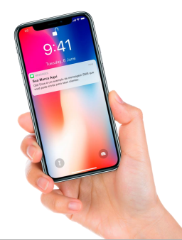

Desculpe, o site está passando por instabilidade no momento. Por favor, tente novamente mais tarde.
SMS PROGRAMÁVEL
É uma solução de software de comunicação que atua
como uma base sobre a qual desenvolvedores podem
integrar uma variedade de aplicativos.
Métodos de comunicação típicos, como voz, chamadas
de vídeo ou mensagens de texto SMS, podem ser
incorporados em outros sistemas por meio de APIs que
se conectam à plataforma CPaaS.
Essas APIs permitem que as empresas expandam suas
ofertas sem a necessidade de hardware ou software
adicional.

Quem usa?
São muitos os caso de uso, mas veja alguns exemplos: